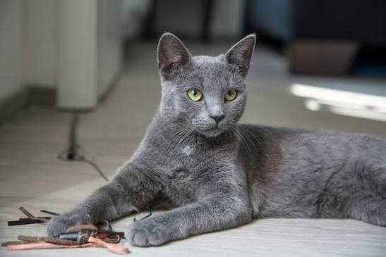

Jerry is a 2-year-old Labrador mix with a playful personality and a heart full of
love. He enjoys long walks, playing fetch, and spending time with people.
Jerry is friendly with children and gets along well with other pets. He is energetic,
intelligent, and always ready to brighten your day with his wagging tail.
Age: 2 Years
Breed: Labrador Mix
Gender: Male
Personality: Friendly, Playful, Loyal
Favorite Activity: Fetching balls and outdoor adventures

Tom is a 1-year-old domestic shorthair cat who loves cozy naps and gentle cuddles.
He is calm, affectionate, and enjoys sitting by the window watching birds. Tom is
well-behaved, curious, and would make a wonderful companion for anyone looking for a
loving feline friend.
Age: 1 Year
Breed: Domestic Shorthair
Gender: Male
Personality: Calm, Affectionate, Curious
Favorite Activity: Sunbathing by the window and chasing toy mice